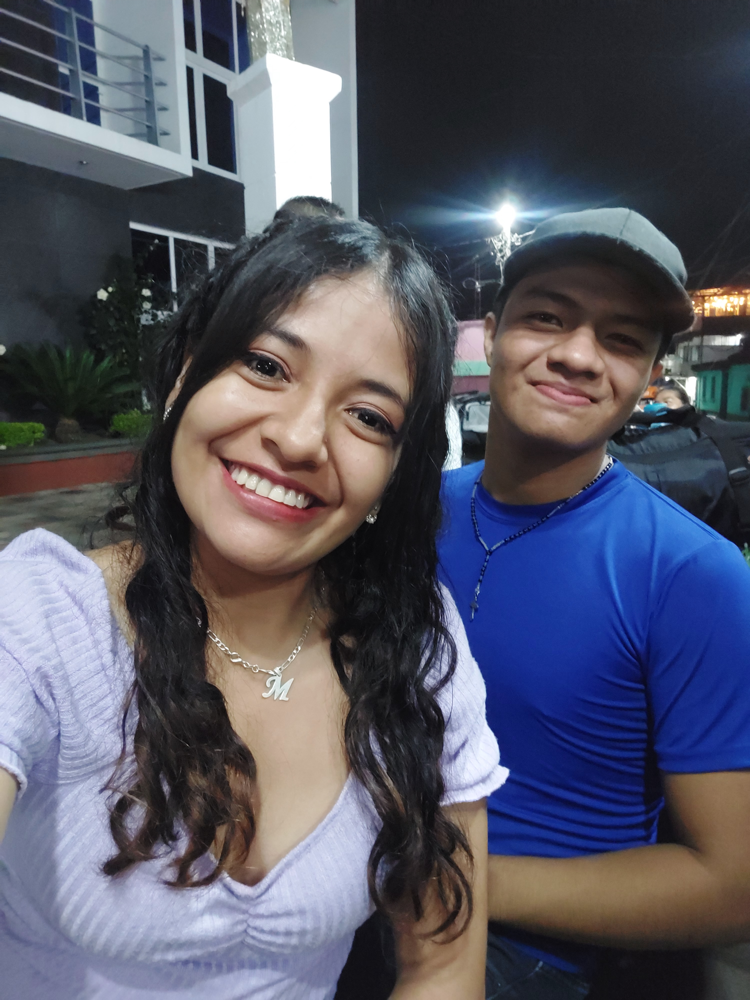

HOLA
MI AMOR🥰

Solo quiero agradecerte por todo este tiempo que hemos compartido, ya son casi 10 meses los 10 meses mas bonitos que he pasado a tu lado mi amor espero poder cumplir
muchos meses más a tu lado.
No se como agradecerte
porque desde que llegaste ha mi vida has cambiado una gran parte de mi, miedos, pena por hacer las cosas, Por pena a el "que diran" creeme que tu borraste todo esoo, Asombrado de lo que has causado
en mi vida, cosas que antes no hacia las he echo contigo, cosas que alas que le tenia mucho miedo ahora las hago contigo
¿Y SABES?
Que Bonito, Bonito saber que una persona puede cambiarte de la noche a la mañana y no voy a negar que tú has cambiado la mia🥰 NO tienes idea lo importante que eres para mi 💘
Solo pido al Destino poder Seguir Juntos y que nadie nos pueda separar, En el momento que escribo esto estas enojada conmigo porque segun tú no quise hablar por llamada 21/11/24🤭🤭🤭🤭
Aun asi te enojes esperare a que tu enojo pase porque en verdad quiero estar a tu lado mi amor💘 Y te lo dije al inicio de todo esto mi amor 😍😍AGUANTARE Y ENTENDERE TU CARACTER😍😍
porque quiero estar contigo SIEMPRE mi amor porque tambien dije que no queria hacerte sentir insegura o hacerte dudar como alguien más en su momento lo hizo, Espero Tambien sea tu pensamiento mi amor estar
💘JUNTOS💘
Asi Tambien agradecerte porque CAMBIASTE un MONTÓN tú sabes el porque lo digo, creeme que en esos momentos pasaba por mi cabeza si en verdad te merecia, Pero pues gracias a Dios cambiaste
YY sii talvez no por mi pero por tí si que eso es lo que importa🥰 No olvidare cuando sali a buscarte a media noche jsjsjs🤭🤭 creeme iba con miedo pero tambien la preocupacion a que te pasara algo
he echo cosas que no hice por nadie más como lo hago contigo, enserio te agradezco por toda esta experiencia por todo lo compartido, por todo lo hablado, por dedicarnos unos minutos de nuestras vidas
es algo tan simple pero tan importante en la vida de cada uno💘

Dios MIO jsjsjs🤭 ¿te acuerdas amor? fue unas de nuestras PRIMERAS fotos JUNTOS😍 Recuerdo 100% que estaba nervioso jaja porque no sabia como en tablar una conversación formal 🤭
jsjsjs fue muy hermoso y en verdad que bonito pasar tiempo contigo, hoy en dia ya no pasamos al parque pero puess me conformo con estar en otro lugar mientras estes tú❤️
espero en estas fechas poder pasarla juntos y un poco más de tiempo😻🥹 PORQUE ❤️❤️❤️❤️❤ TE QUIERO PARA TODAAA MI VIDAAAAAAA❤️❤️❤️❤️❤️

AYYYYYY MI AMOR🥺🥺🥺🥺 en verdad todas las fotos fueron las que hice por primera vez 🤭🤭🤭🤭🤭Asi como esta foto jsjs estaba muy nervioso y tu estabas muy hermosa🤤🤤🤤
enserio que hermosa ibas ese dia mi amor🤤 me encantas cada dia que pasa, AMO AMO estar contigo, me encantas a cualquier hora y cualquier dia🤤 eres unicaa mi amor
❤️ME ENAMORAS CADA DIA MÁS MI AMOR❤️